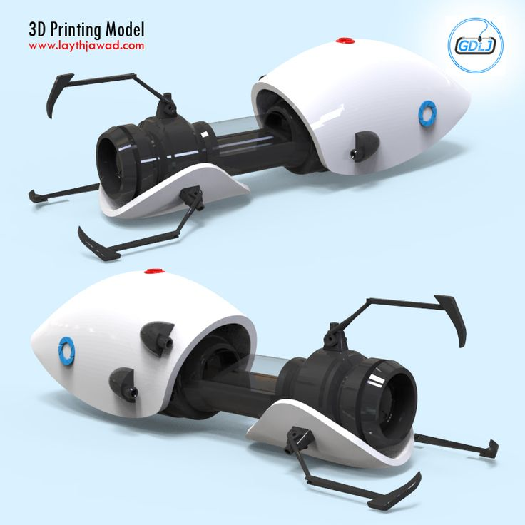

Revolucionize Sua Forma de Viajar com o TeleporteX
Descubra a Próxima Fronteira da Tecnologia: Viaje Instantaneamente para Qualquer Lugar Com seu Dispositivo de Teletransporte Pessoal
Benefícios:
- Viagens Instantâneas
- Economia de Tempo
- Exploração Ilimitada
- Ecológico
- Conexões Internacionais Instantâneas
- Conveniência Absoluta
- Experiências Inesquecíveis
- Inovação Tecnológica
- 
Descrição:
Viaje Instantaneamente para um Novo Mundo de Possibilidades.
O TeleporteX é mais do que um simples dispositivo; é uma revolução no modo como experimentamos viagens. Imagine-se instantaneamente transportado para o coração de Paris para um café ao lado da Torre Eiffel, ou para as praias cristalinas de Bali para um pôr do sol inesquecível. Com o TeleporteX, o mundo está ao alcance de um toque.
Desbloqueie uma Nova Era de Viagens.
Deixe para trás as limitações do tempo e da distância. Com o TeleporteX, você não está mais preso aos horários de voos, filas de aeroportos ou estradas congestionadas. Este dispositivo revolucionário permite que você viaje para qualquer lugar do planeta em questão de segundos, abrindo um universo de possibilidades e aventuras.
Viagens Instantâneas, Memórias Eternas.
Seja para uma escapadela de fim de semana ou uma jornada épica ao redor do mundo, o TeleporteX torna tudo possível. Economize tempo precioso que antes seria gasto em deslocamentos e ganhe experiências de vida que ficarão para sempre em sua memória.
Conveniência Absoluta, Liberdade Sem Limites
Com o TeleporteX, você controla o tempo e o espaço. Viaje quando for mais conveniente para você, sem se preocupar com horários de voos ou reservas de hotéis. Liberte-se das restrições tradicionais de viagem e crie seu próprio itinerário de aventuras.
Exploração Sem Fronteiras
Dos picos nevados dos Himalaias às profundezas azuis do oceano, o TeleporteX abre portas para locais que antes eram inacessíveis. Explore o mundo com a facilidade de um toque, descobrindo novas culturas, paisagens deslumbrantes e experiências únicas.
Privacidade e Segurança
Viaje com total privacidade e segurança. Sem passar por verificações de segurança invasivas ou expor seus pertences à inspeção, o TeleporteX garante uma jornada tranquila e sem preocupações.
Ecológico e Sustentável
Faça parte da mudança para um mundo mais verde. Com o TeleporteX, você está reduzindo sua pegada de carbono ao evitar viagens aéreas tradicionais, contribuindo para um ambiente mais saudável para as gerações futuras.
Seja Pioneiro na Nova Fronteira da Tecnologia
Ao adquirir o TeleporteX, você não está apenas comprando um produto; está investindo em uma nova forma de viver e explorar o mundo. Seja parte da elite que abraça a vanguarda da tecnologia, experienciando o futuro das viagens hoje.
Transforme seus Sonhos em Realidade
O TeleporteX está pronto para levá-lo em uma jornada inesquecível. Seja para negócios ou lazer, aventura ou relaxamento, o poder de explorar o mundo está literalmente em suas mãos. Não espere mais para embarcar nesta jornada extraordinária. Adquira o TeleporteX e descubra um universo de possibilidades além da imaginação.